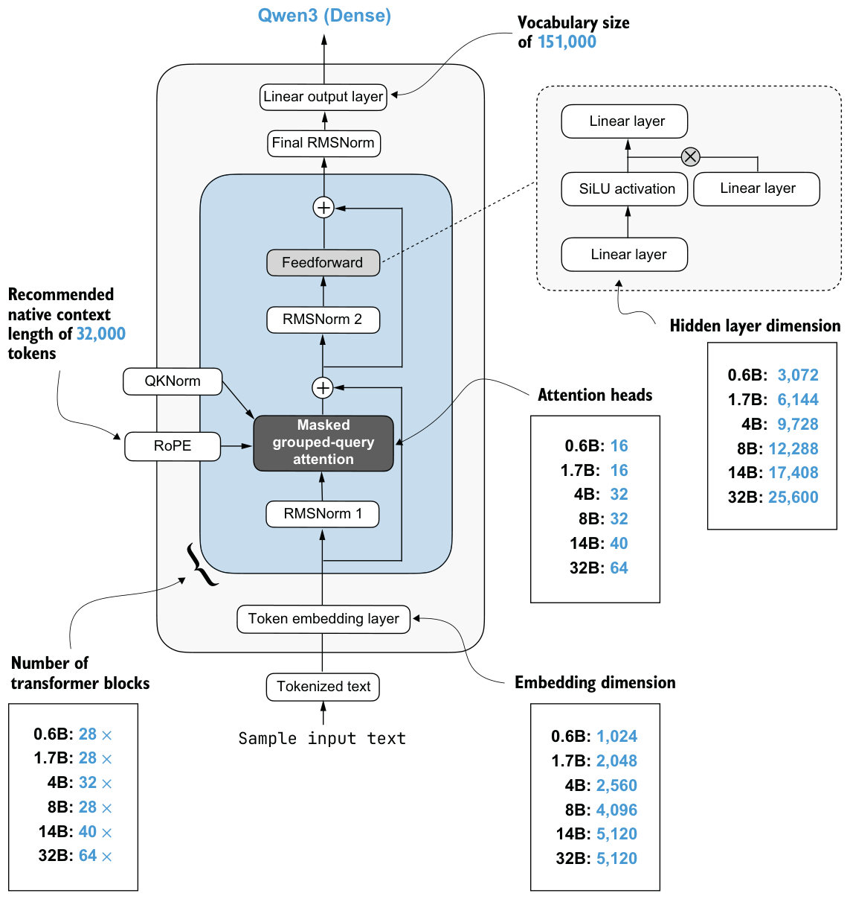

D.1Larger dense Qwen3 configurations
The book’s repository includes configuration dictionaries for several larger Qwen3 models in the reasoning_from_scratch.appendix_c Python library, listed in table D.1. You can also view the source code directly at https://github.com/rasbt/reasoning-from-scratch/blob/main/reasoning_from_scratch/appendix_c.py.
| Model size | Configuration Python dictionary |
|---|---|
| 1.7B | QWEN3_CONFIG_1_7B |
| 4B | QWEN3_CONFIG_4B |
| 8B | QWEN3_CONFIG_8B |
| 14B | QWEN3_CONFIG_14B |
| 32B | QWEN3_CONFIG_32B |
The models listed in table D.1 are the dense Qwen3 variants, similar to the Qwen3 0.6B model used in the book and discussed in appendix C. Here, “dense” means these are not the sparse mixture-of-experts (MoE) variants of Qwen3. MoE models are not supported by this book’s code, but a from-scratch implementation is available here: https://github.com/rasbt/LLMs-from-scratch/tree/main/ch05/11_qwen3.
Figure D.1 summarizes the differences between the models in table D.1 more visually. As you can see, the different Qwen3 size variants all use the same overall architecture pattern as the 0.6B model from appendix C. They still use token embeddings, grouped-query attention, rotary position embeddings, feedforward layers, and RMS normalization. The differences involve the model dimensions, such as the embedding size, the number of layers, the number of attention heads, and the feedforward hidden dimension.
Table D.2 lists the estimated memory requirements for loading the models into RAM (and GPU RAM). As a rough lower bound, storing weights in bfloat16 precision (the common default for LLMs) requires about 2 bytes per parameter.
| Model size | Approximate memory for weights in bfloat16 |
|---|---|
| 1.7B | About 3.4 GB |
| 4B | About 8 GB |
| 8B | About 16 GB |
| 14B | About 28 GB |
| 32B | About 64 GB |
The numbers in table D.2 are only approximate lower bounds for the weights themselves. Actual runtime memory use is higher because we also need memory for activations, temporary buffers, the KV cache, and so on. In addition, model loading can temporarily increase memory use because tensors may exist in more than one place while they are being copied into the Qwen3Model instance. See the supplementary materials for my Build A Large Language Model (From Scratch) book for more details: https://github.com/rasbt/LLMs-from-scratch/tree/main/ch05/08_memory_efficient_weight_loading.
Sample input text
D.2Downloading larger checkpoints overview
Unlike the 0.6B checkpoints used in this book, which I converted into PyTorch checkpoints to minimize external code dependencies, larger official Qwen3 models are typically distributed as safetensors files, sometimes split across multiple shards.
The reasoning-from-scratch Python library provides a helper function, download_ from_huggingface_from_snapshots, to handle this. This function, which we’ll use in the next section, downloads the Hugging Face snapshot into a local directory and then loads either a single model.safetensors file or multiple shards referenced via a model
.safetensors.index.json file.Because this helper function relies on additional packages that were not required in the earlier chapters, you may need to install them first:
uv add huggingface_hub safetensorsor
pip install huggingface_hub safetensorsOnce these packages are installed, loading a larger checkpoint follows the same broad pattern as before. You’ll need to download the files, instantiate the model, load the weights, prepare the tokenizer, and then run the text generation, as you’ll see in the next section.
D.3Loading a larger base model
We will now walk through a complete example using the official Qwen3 4B base model. The first step, shown in listing D.1, is to download the model snapshot from the Hugging Face Model hub (https://huggingface.co/Qwen/Qwen3-4B-Base).
from pathlib import Path
from reasoning_from_scratch.ch02 import get_device
from reasoning_from_scratch.appendix_c import (
download_from_huggingface_from_snapshots,
)
device = get_device()
local_dir = Path("qwen3-4b-base")
weights = download_from_huggingface_from_snapshots(
repo_id="Qwen/Qwen3-4B-Base",
local_dir=local_dir,
)The local_dir path specifies where the snapshot should be stored on disk. In this example, we keep the 4B base model in a dedicated qwen3-4b-base folder so that it stays separate from the smaller qwen3 directory used throughout the book.
Next, we use the code in listing D.2 to instantiate the 4B model and load the Hugging Face weights into the from-scratch Qwen3Model implementation.
from reasoning_from_scratch.qwen3 import (
Qwen3Model,
load_hf_weights_into_qwen,
)
from reasoning_from_scratch.appendix_c import QWEN3_CONFIG_4B
model = Qwen3Model(QWEN3_CONFIG_4B)
load_hf_weights_into_qwen(
model,
param_config={
"n_layers": QWEN3_CONFIG_4B["n_layers"],
"hidden_dim": QWEN3_CONFIG_4B["hidden_dim"],
},
params=weights,
)
model.to(device)
model.eval()The QWEN3_CONFIG_4B dictionary defines the architecture dimensions for the 4B model. The load_hf_weights_into_qwen helper then maps the Hugging Face parameter names into the parameter names used by our own implementation. After that, model.to(device) moves the model to the selected device, and model.eval() switches the model into inference mode.
After the model is loaded, we prepare the tokenizer.
from reasoning_from_scratch.qwen3 import Qwen3Tokenizer
import shutil
tokenizer_src = local_dir / "tokenizer.json"
tokenizer_path = local_dir / "tokenizer-base.json"
if not tokenizer_path.exists():
shutil.copyfile(tokenizer_src, tokenizer_path)
tokenizer = Qwen3Tokenizer(tokenizer_file_path=tokenizer_path)The Hugging Face snapshot stores the tokenizer under the generic name tokenizer.json. In listing D.3, we copy it to tokenizer-base.json so that it is easy to distinguish from the reasoning tokenizer that we’ll use in the next section.
We can now use the model for generation exactly as we did with the smaller 0.6B model in chapter 2.
import torch
from reasoning_from_scratch.ch02 import (
generate_text_basic_stream_cache,
)
prompt = "Explain large language models in two sentences."input_ids = torch.tensor(
tokenizer.encode(prompt),
device=device,
).unsqueeze(0)
for token in generate_text_basic_stream_cache(
model=model,
token_ids=input_ids,
max_new_tokens=64,
eos_token_id=tokenizer.eos_token_id,
):
print(tokenizer.decode(token.squeeze(0).tolist()), end="", flush=True)As in chapter 2, we encode the input prompt, add a batch dimension via unsqueeze(0), and then stream the generated tokens one by one.
The output is as follows:
Large language models are artificial intelligence systems that use deep learning
techniques to understand and generate human-like text. They are trained on vast
amounts of data and can perform a wide range of natural language processing tasks,
such as translation, summarization, and question answering.This is a nice property of reusing the same Qwen3Model abstraction across model sizes. Once the checkpoint and tokenizer are set up correctly, the inference code looks essentially the same.